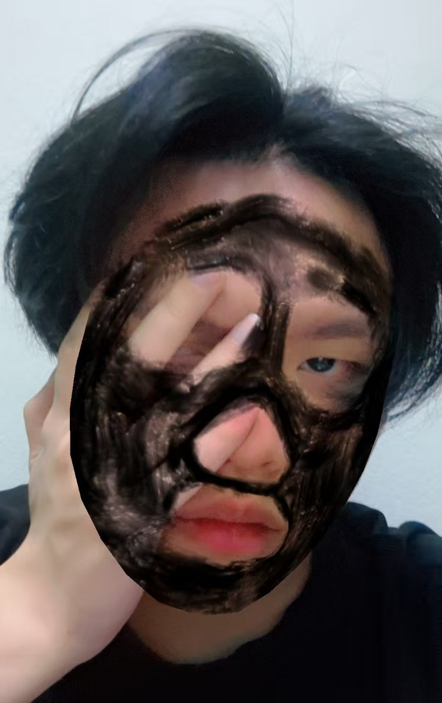

Hello, my name is Anson Lim. Im 23 years old this year, born in 2003, and my MBTI is ISFP. Im an extremely introverted and lazy person. When you first meet me, I might seem very quiet and evencold. But once you get to know me better, I can become quite crazy and shameless in a fun way.
I tend to overthink a lot sometimesut people, situations, and the things I do. I often replay moments in my head, wondering whether I made the right choice or if I should have done something differently. I often overthink my decisions, but i dont really regret it. because maybe the other path would have been even worse.
Lastly, I am someone who tring to enjoy life, I appreciate small simple moments in life no method good or bad. I will capture them as part of my memories.
